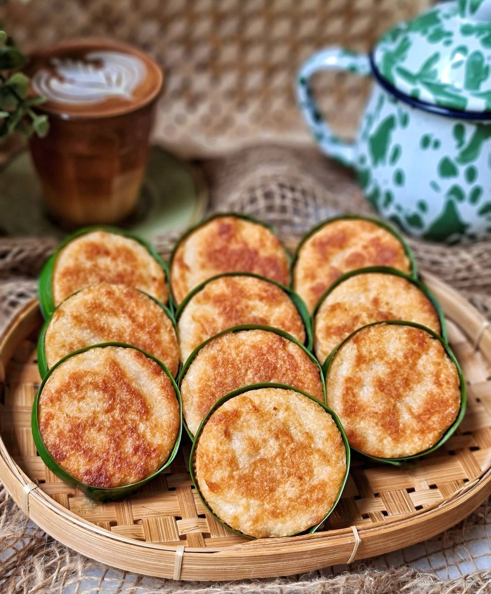
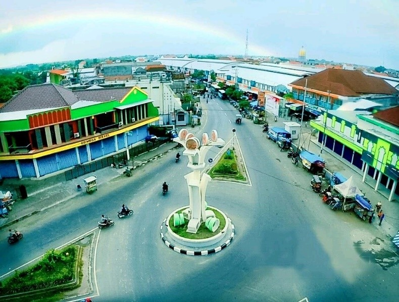
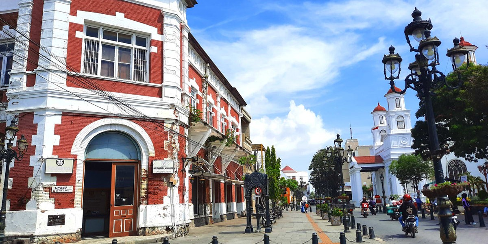

Sejarah
Keberadaan Wingko Babat Kuliner Khas Semarang Tahun 1946-2019, jajanan wingko pertama kali
dibuat oleh Loe Soe Siang dan istrinya Djoa Kiet Nio pada 1898. Keduanya perantau dari Tiongkok
yang menetap di Babat, Lamongan.
Sejarah mencatat bahwa kue wingko berasal dari kota kecil bernama Babad yang terletak
di dekat Tuban, Jawa Timur. Sejak dulu hingga sekarang, kue wingko biasa dijual di Babad.
Dari sinilah kemudian kue wingko terkenal dengan nama "wingko babad".
Adanya klaim dari dua daerah (Semarang dan Lamongan) terhadap wingko babad sebagai makanan khas
daerahnya selama ini kurang diperhatikan atau bahkan dilupakan oleh masyarakat. Meskipun terlihat
agak membingungkan, kita masih bisa mengetahui tentang kebenaran klaim tersebut dengan menelusurinya
dari catatan sejarah yang ada. Sejarah telah mencatat bahwa wingko babad berasal dari Babad, Kabupaten
Lamongan, kemudian berkembang di Semarang karena dibawa olah warga Babad yang pindah ke Semarang.

Apa itu Wingko?
Dalam bahasa Jawa istilah wingko diartikan sebagai pecahan genteng (kreweng yaitu pecahan genteng kecil-kecil,
sedangkan wingko merupakan pecahan genteng yang ukurannya (kurang lebih sebesar lingkaran cangkir) lebih besar
dibandingkan kreweng).
Wingko adalah sejenis kue yang terbuat dari kelapa muda, tepung beras ketan dan gula. Kue ini sering dijual di
stasiun kereta api, stasiun bus atau juga di toko-toko kue untuk oleh-oleh keluarga. Wingko sendiri memiliki rasa
yang manis dan gurih.
Keunikan dari wingko adalah diolah dengan cara dipanggang, sehingga aroma kelapa muda sebagai bahan pokoknya tercium
lebih menyengat. Wingko yang dijual sudah dikemas dengan kantung kertas, biasanya pada bungkus kertas tersebut tertera
merek dagang atau nama pabrik pembuatnya.

Asal
Dari sejarah yang ada, wingko babat merupakan makanan yang pertama kali dibuat oleh perantauan dari Tiongkok yang menetap
di Babat, Lamongan. Hal inilah yang menjadikan wingko babat sebagai makanan khas dari daerah Babat, Lamongan. Akan tetapi
hingga kini makanan tersebut juga menjadi makanan khas dari Kota Semarang. mengapa demikian? mari kita ulas kedua kota
tersebut.
Kota Babat

Babat adalah sebuah kota kecamatan di Kabupaten Lamongan, Jawa Timur, Indonesia. Kecamatan ini berjarak sekitar 27 Kilometer
dari Pusat Kota Lamongan ke arah barat, dan 74 Kilometer dari Pusat Kota Surabaya ke arah barat. Kecamatan ini mendapat julukan
"Kota Wingko", kue khas Jawa Timur yang cukup legendaris dan memang asli berasal dari kota ini. Dari sejarah diatas telah dibenarkan
bahwa wingko babat merupakan makanan yang dibuat Loe Soe Siang dan istrinya Djoa Kiet Nio pada 1898. Keduanya perantau dari Tiongkok
yang menetap di Babat, Lamongan.
Kota Semarang

Kota Semarang adalah ibukota Provinsi Jawa Tengah, Indonesia sekaligus kota metropolitan terbesar kelima di Indonesia sesudah Jakarta,
Surabaya, Medan, dan Bandung. Makanan khas dari kota ini sama dengan makanan khas dari Kota Babat. Hal ini dikarenakan usaha Loe Soe Siang
yang merupakan perantauan dari Tiongkok yang menetap dibabat diteruskan dua anaknya yaitu Loe Lan Ing dan Loe Lan Hwa. Loe Lan Ing merupakan
pewaris generasi ke dua usaha wingko babat di Babat Lamongan. usaha yang dimaksud disini ialah usaha dagang wingko babat.